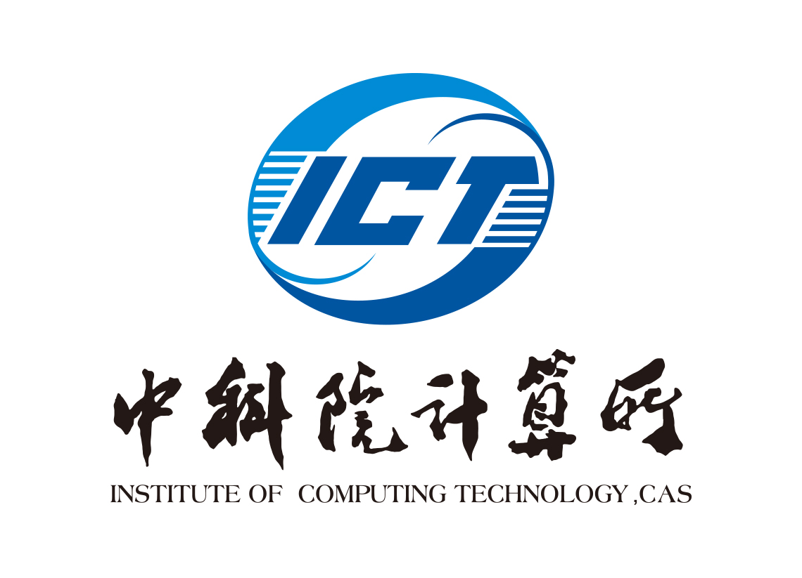

Biography
Yuanzhou Yao is currently a 2rd-year master candidate in Institute of Computing Technology (ICT), Chinese Academy of Sciences (CAS),
under the supervision of Prof. Yongjun Xu and Dr. Zhao Zhang.
He received the B.S. degree from Sichuan Agriculture University (SICAU) in 2021.
He is a (student) member of the IEEE.
His major research interests lie within NLP and Data Mine, such as
- Knowledge Graphs (KGs), KG Construction/Embedding/Completion, KG for NLP Tasks
- Information Systems (IS), KG for RS/Information Retrieval (IR), Multi-task or Multi-modal in RS/IR
Publications
-
A Knowledge Enhanced Hierarchical Fusion Network for CTR Prediction under Account Search Scenario in WeChat
Yuanzhou Yao, Zhao Zhang, Kaijia Yang, Huasheng Liang, Qiang Yan, Fuzheng Zhuang, Boyu Diao, Yongjun Xu
International World Wide Web Conference (WWW), 2023. [CCF-A]
[PDF]
-
Data Augmentation for Few-Shot Knowledge Graph Completion from Hierarchical Perspective
Yuanzhou Yao,Zhao Zhang,Yongjun Xu,Chao Li
International Conference on Computational Linguistics (COLING), 2022. [CCF-B].
[PDF]
-
Estimation of the gender ratio of chickens based on computer vision: Dataset and exploration
Yuanzhou Yao, Haoyang Yu, Jiong Mu, Jun Li, Haibo Pu
Entropy, 2020.[JCR-2,IF=2.738].
[PDF]
[Code]
Research Experience
-
Tencent WeChat, Guangzhou, China
Research Intern .
Jul. 2022 – Now
-
Research on Click-through Prediction(CTR) for Accoutn Retrieval in Wechat.
-
Multi-task learning in Information Retrieval Systems
-
ByteDance TikTok, Beijing, China
Research Intern.
Apr. 2022 – Jul. 2022
-
Research on Multi-modal pretraining model.
-
Deploy Multi-modal model to the current projects.
-
Westlake University, Hangzhou, China
-
Research on AI for Sciences.
-
Apply VAE/AAE/DAAE AIGC model to AI Cross disciplines .
Awards and Honor
-
The First-class Scholarship of the Chinese Academy of Sciences
Master period .
Dec. 2022
-
Chinese Academy of Sciences Institute of Computing Excellence Award
Master period (Top 5%).
Oct. 2022
-
Bachelor's Thesis Award
Undergraduate period (Top 1%).
Jun. 2021